Introducere
Access oferă mai multe opțiuni care vă permit să proiectați și să rulați interogări care returnează exact informațiile pe care le căutați. De exemplu, ce se întâmplă dacă trebuie să aflați câte ceva există în baza de date? Sau ce se întâmplă dacă doriți ca rezultatele interogării dvs. să fie sortate automat într-un anumit fel? Dacă știți cum să utilizați opțiunile de interogare în Access, puteți crea aproape orice interogare doriți.
În această lecție, veți învăța cum să modificați și să sortați interogările în vizualizarea Proiectare interogare, precum și cum să utilizați funcția Totaluri pentru a crea o interogare care poate efectua calcule cu datele dvs. Veți afla, de asemenea, despre opțiunile suplimentare de creare a interogărilor oferite în Access.
Modificarea interogărilorAccess oferă mai multe opțiuni pentru ca interogările dvs. să funcționeze mai bine pentru dvs. Pe lângă modificarea criteriilor de interogare și alăturari după ce le creați, puteți alege să sortați și să ascundeți câmpurile din rezultatele interogării.
Pentru a modifica interogarea dvs.:Când deschideți o interogare existentă în Access, aceasta este afișată în vizualizarea foaie de date, ceea ce înseamnă că veți vedea rezultatele interogării dvs. într-un tabel. Pentru a vă modifica interogarea, trebuie să intrați în vizualizarea design, vizualizarea pe care ați folosit-o când ați creat-o. Există două moduri de a comuta la vizualizarea Design:
- În fila Acasă a Panglicii, faceți clic pe comanda Vizualizare. Selectați Vizualizare design din meniul derulant care apare.
- În colțul din dreapta jos al ferestrei dvs. Acces, găsiți pictogramele mici de vizualizare. Faceți clic pe pictograma Design View , care este pictograma cea mai îndepărtată la dreapta.
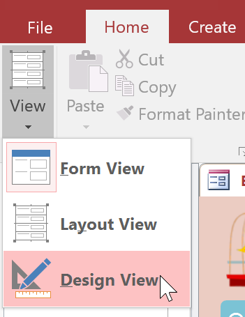
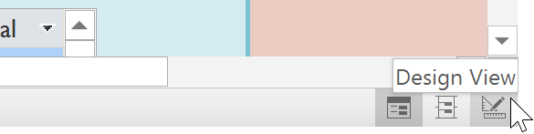
Odată ajuns în vizualizarea Design, faceți modificările dorite, apoi selectați comanda Executare pentru a vedea rezultatele actualizate.
Access vă permite să aplicați mai multe sortări simultan în timp ce vă proiectați interogarea. Acest lucru vă permite să vizualizați datele exact așa cum doriți.
O sortare care include mai multe câmpuri sortate se numește sortare pe mai multe niveluri. O sortare pe mai multe niveluri vă permite să aplicați o sortare inițială, apoi să organizați în continuare datele cu sortări suplimentare. De exemplu, dacă ați avut un tabel plin cu clienți și adresele acestora, ați putea alege mai întâi să sortați înregistrările după oraș, apoi alfabetic după nume de familie.
Când într-o interogare sunt incluse mai multe sortări, Access citește sortările de la stânga la dreapta. Aceasta înseamnă că sortarea din stânga va fi aplicată prima. În exemplul de mai jos, clienții vor fi sortați mai întâi după orașul în care locuiesc și apoi după codul poștal din acel oraș.
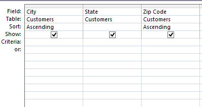
Pentru a aplica o sortare pe mai multe niveluri:- Deschideți interogarea și comutați la vizualizarea Design.
- Localizați mai întâi câmpul pe care doriți să îl sortați. În rândul Sortare :, faceți clic pe săgeata derulantă pentru a selecta fie o sortare ascendentă, fie descendentă.
- Repetați procesul în celelalte câmpuri pentru a adăuga sortări suplimentare. Rețineți că sortările sunt aplicate de la stânga la dreapta, așa că orice sortare suplimentară trebuie aplicată câmpurilor situate în dreapta sortării dvs. primare. Dacă este necesar, puteți rearanja câmpurile făcând clic pe partea de sus a unui câmp și trăgându-l într-o locație nouă.
- Pentru a aplica sortarea, faceți clic pe comanda Executare.
- Rezultatele interogării dvs. vor apărea cu sortarea dorită.
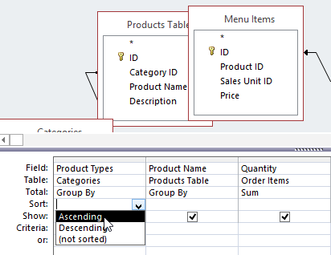

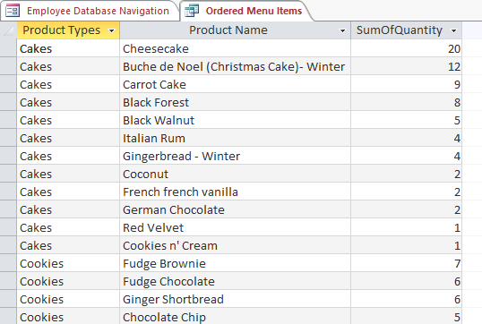
Uneori este posibil să aveți câmpuri care conțin criterii importante, dar este posibil să nu aveți nevoie să vedeți informațiile din acel câmp în rezultatele finale. De exemplu, luați una dintre interogările pe care le-am construit în ultima noastră lecție: o interogare pentru a găsi numele și informațiile de contact ale clienților care au plasat comenzi. Am inclus numerele de identificare a comenzii în interogarea noastră, deoarece doream să ne asigurăm că am atras doar clienții care au plasat comenzi.
Cu toate acestea, nu aveam nevoie să vedem aceste informații în rezultatele finale ale interogării noastre. De fapt, dacă am fi căutat doar numele și adresele clienților, a vedea numărul de comandă amestecat acolo ar fi putut distrage atenția. Din fericire, Access facilitează ascunderea câmpurilor, incluzând în continuare orice criterii pe care le conțin.
Pentru a ascunde un câmp într-o interogare:- Deschideți interogarea și comutați la vizualizarea Design.
- Localizați câmpul pe care doriți să-l ascundeți.
- Faceți clic pe caseta de selectare din rândul Afișare: pentru a o debifa.
- Pentru a vedea interogarea actualizată, selectați comanda Run . Câmpul va fi ascuns.
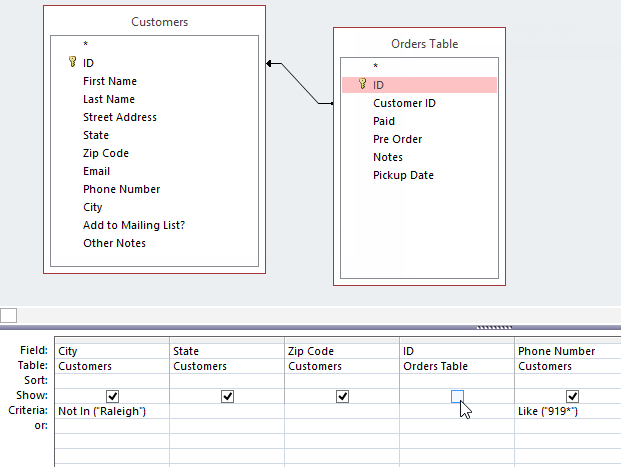
Până în acest moment, ar trebui să înțelegeți cum să creați o interogare simplă cu un singur tabel sau cu mai multe tabele folosind mai multe criterii. Interogările suplimentare vă oferă posibilitatea de a efectua acțiuni și mai complexe cu baza de date. Una dintre acestea este interogarea totaluri, care vă permite să efectuați calcule cu datele dvs.
Totaluri de interogăriUneori, stabilirea unor criterii simple nu vă va oferi rezultatele de care aveți nevoie, mai ales când lucrați cu valori numerice. Poate doriți să vedeți rezultatele interogării grupate sau numărate într-un fel. De exemplu, să presupunem că vrem să aflăm câte din fiecare articol de meniu au fost comandate la brutăria noastră — câte Croissant cu migdale, plăcinte cu mere și așa mai departe. Pentru a face acest lucru, am putea crea o interogare de totaluri pentru a găsi suma cantităților pentru fiecare articol.
În primul rând, interogarea totaluri va grupa toate elementele de meniu similare din comenzi separate (de exemplu, Croissant cu migdale). Apoi, funcția Sumă va adăuga valorile din câmpul Cantitate pentru a calcula numărul total vândut pentru acel articol.
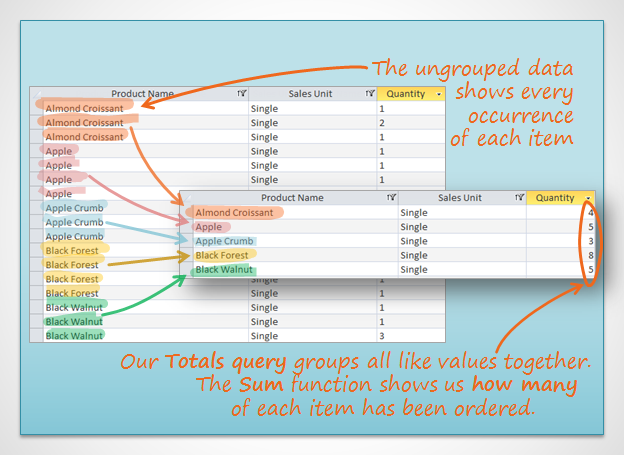
Funcția Sum ne-a ajutat să găsim informațiile dorite în acest exemplu, dar în alte situații poate fi necesar să folosiți o altă funcție pentru a găsi răspunsul de care aveți nevoie. Există mai multe funcții din care puteți alege:
- Count : numără numărul total al fiecărui articol
- Sumă : Adună valorile împreună
- Media : Găsește media valorilor
- Maximum : returnează cea mai mare valoare
- Minimum : returnează cea mai mică valoare
- First : returnează prima sau cea mai veche valoare
- Last : returnează ultima sau cea mai recentă valoare
Pentru exemplul nostru, dorim să găsim numărul total pe care l-am vândut din fiecare dintre articolele noastre de meniu, așa că vom folosi o interogare care să ne arate toate articolele de meniu pe care le-am vândut. Dacă doriți să urmăriți în baza noastră de date, deschideți interogarea Elemente de meniu ordonate.
- Creați sau deschideți o interogare pe care doriți să o utilizați ca interogare de totaluri.
- Din fila Design, localizați grupul Afișare/Ascunde , apoi selectați comanda Totaluri.
- Un rând va fi adăugat la tabel din grila de proiectare, cu toate valorile din acel rând setate la Group By. Selectați celula din rândul Total: al câmpului pe care doriți să efectuați un calcul, apoi faceți clic pe săgeata derulantă care apare.
- Selectați calculul pe care doriți să îl efectuați în acel câmp. În exemplul nostru, dorim să adăugăm cantitățile de produse pe care le-am vândut, așa că vom selecta opțiunea Sumă.
- Când sunteți mulțumit de designul interogării dvs., selectați comanda Executare din fila Proiectare instrumente de interogare pentru a rula interogarea.
- Rezultatele interogării vor fi afișate în vizualizarea Foaie de date a interogării, care arată ca un tabel. Dacă doriți, salvați interogarea făcând clic pe comanda Salvare din bara de instrumente Acces rapid.
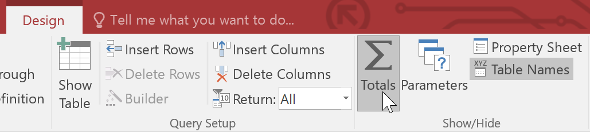
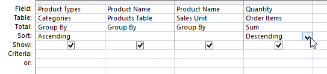
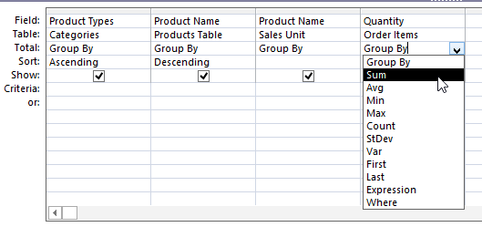
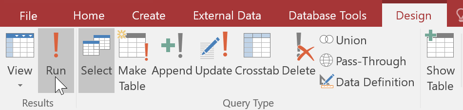
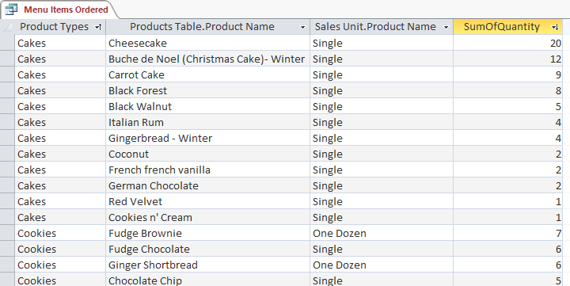